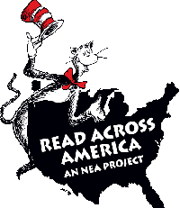
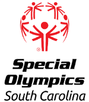

Volunteer & Foster, Palmetto Animal League (May 2013 – present)
For over four years I've worked regularly with a local shelter both as a volunteer at their actual facility, and as a foster by taking home animals in need of additional care. Pictured here on the left is Reggie, a three week old kitten who I had for six months until she was ready for adoption.
Computational Science Note-taker, USCB (August 2017 – present)
The University of South Carolina Beaufort has accommodations available for students with disabilities. Access to notes is one of those accommodations, and I provided that for one of my classes during the Fall semester. I scanned and shared my notes from each class with students who had provided the proper documentation to USCB's disability services department.
Read Across America (March 2016)
Read Across America is an annual event held on March 2nd that celebrates and promotes reading for children. Hundreds of schools across the country participate. The National Education Association and its sponsors provide support for the event, as well as year-round support for schools trying to promote reading for their students. For my part in this event last fall, I ran the sign-in and welcome center. I also provided the tickets that kids could exchange for free books.
S.O.A.R. Special Olympics (June 2016)
S.O.A.R. is an organization that focuses on providing year-round recreation activities for people with disabilities. They work with both children and adults. Every year, they organize the Special Olympics in our area and provide lunch, t-shirts, awards, photos, and an overall fun afternoon for all participants. I helped with general setup work last year.